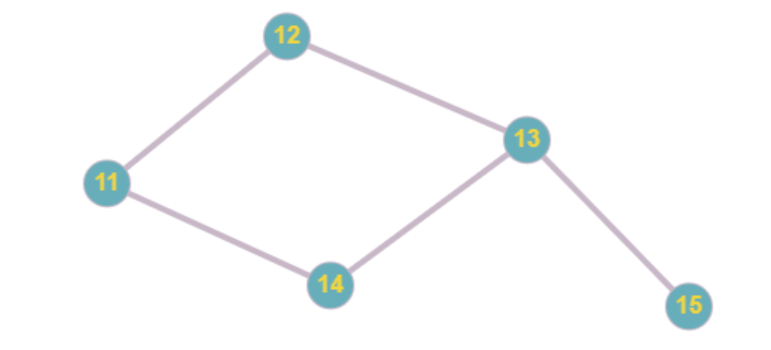
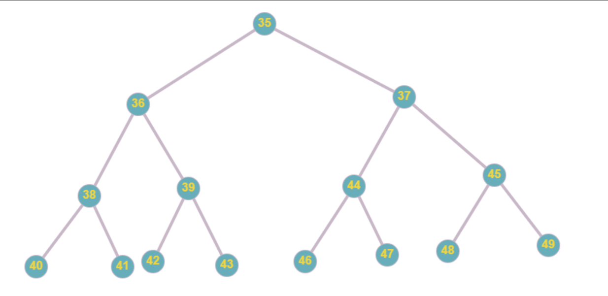

Теория Графов— раздел дискретной математики, изучающий
свойства
графов. В общем смысле граф представляется как множество вершин
(узлов), соединённых рёбрами. В строгом определении графом называется
такая пара множеств , где есть подмножество любого счётного множества,
а — подмножество

Ориентированный граф (орграф) – это граф, у которого пары в
наборе X являются упорядоченными.

Неориентированный граф - это граф, рёбра которого не имеют направления

Если в графе две любые вершины соединены путём, то такой граф
называется связным

Несвязный граф - граф, содержащий более одного компонента связности

Степень вершины в теории графов - количество рёбер графа
Дерево - связный анциклический граф

Два графа называются изоморфными, если между их множествами вершин и
множествами ребер (дуг) существуют взаимно однозначные соответствия